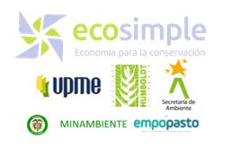
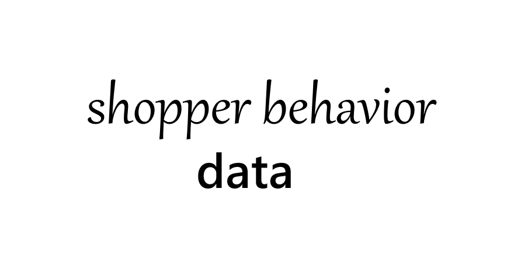
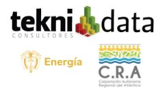
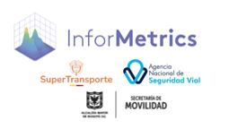

¿En qué te ayudo?
Analista de Datos en desarrollo, con experiencia previa en consultoría. Trabajo con datos cuantitativos y cualitativos, desde bases sencillas hasta entornos de Big Data, para apoyar la toma de decisiones.
Trabajo con distintas herramientas y plataformas según las necesidades de cada proyecto, participando en etapas como exploración, limpieza/preparación, transformación, análisis y visualización. Me enfoco en convertir información en métricas claras, reportes y dashboards útiles para negocio y gestión.
Actualmente profundizo en Big Data y analítica espacial como dominio de aplicación del análisis de datos, combinando Python, JS, y SIG para trabajar con datos territoriales y estadísticos complejos.

Análisis y gestión de datos
Procesamiento, limpieza, análisis estadístico y visualización de datos estructurados y no estructurados. Uso práctico de SQL, R, Python y herramientas en la nube para extraer valor de grandes volúmenes de información.

Análisis sectoriales
Elaboro productos técnicos que combinan análisis, redacción y diseño para facilitar la toma de decisiones en sostenibilidad, movilidad, regulación, bioeconomía y planificación territorial.

Analítica espacial
Análisis de datos geoespaciales para comprender dinámicas territoriales. Integración de Google Earth Engine, QGIS y GeoPandas para análisis multitemporal y segmentación de coberturas.
Colaboraciones
He participado en proyectos multidisciplinarios que combinan tratamiento y explotación de datos, análisis técnico y su visualización, adaptándome a distintas plataformas y entornos según los objetivos de cada equipo o cliente. También he incorporado tecnologías emergentes, como inteligencia artificial y procesamiento espacial, para enriquecer el análisis y aportar una mirada más estratégica.



